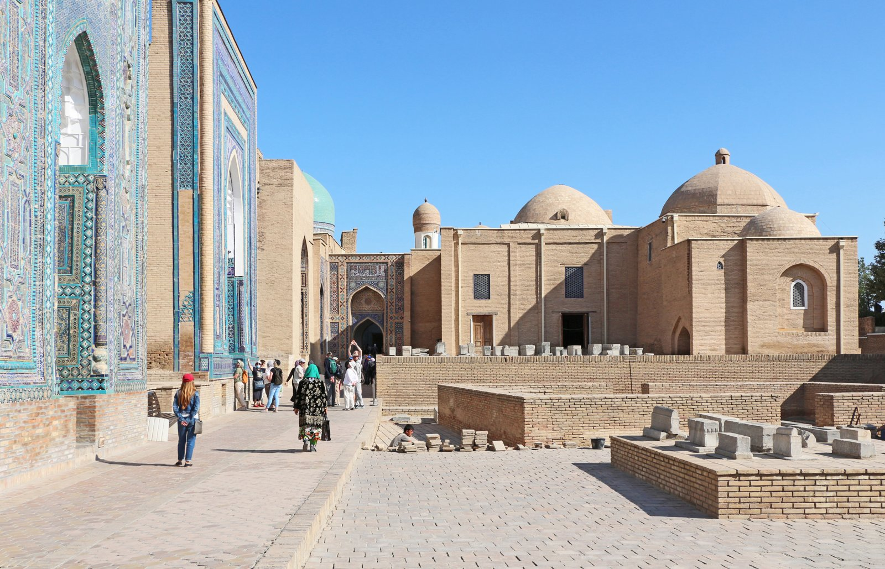

FOTOGRAFIK KUZATUVLARSAMARQAND / 01—03
Shahar
xotirasi
Me’morchilikni ko‘rishning
boshqa bir usuli.

Uch qarash.
Bitta shahar.
Bu bo‘limda kolleksiyangizga asar qo‘shilmagan.
O‘zingizning ko‘rgazmangizni tuzing.
Tanlangan lavhalar va manbalarni fayl qilib oling.